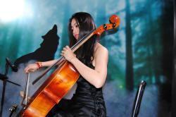

Intensifying adverbs: emphasisers, amplifiers, downtoners
Intensifying adverbs have some unique characteristics. They are common, especially in spoken language and their mastery can significantly enhance our learners' communicative powers.
A word of warning:

Any search of the web for these things will
produce some misleading results. In many cases, they will be
wrongly (or even not) classified, wrongly described or not really
adverbs at all. The following attempts to avoid these pitfalls.
The reason for the confusion is often a naïve
understanding of the term intensifier which, at first sight,
seems to imply only making things stronger (because that's what it
means in a non-technical sense).
This is, however, not a non-technical area.
Intensifying adverbs do not always increase the effect of item they
modify, as a careless understanding of the term would suggest.
They can also suggest a low degree (downtoning) or an approximate degree. They
are all analysed here as intensifying adverbs because they all affect
the intensity of what is said or written.
 |
Three types |
There are these three sorts of intensifying adverbs. In these all the examples are of adverbs modifying adjectives to keep things simple but, as we shall shortly see, there are many other items that they can modify:
- Amplifiers increase the strength of the item modified
- Maximisers denoting the extreme end of a scale:
that is completely wrong
you are totally mistaken - Boosters which enhance the strength of the item:
you are deeply mistaken
that is severely limited
- Maximisers denoting the extreme end of a scale:
- Emphasisers usually express the speaker's point of view, making
it clear that something is to be considered emphatic and stressed.
that is plainly untrue
she's simply wonderful
she is obviously uncertain
that's even better - Downtoners diminish the strength of the item
they modify
They come in three shades:- compromisers (a small group not considered here further
which imply the speaker is not entirely certain)
that's quite nice
he's sort of friendly - diminishers and minimisers which reduce the effect of the
item they modify
that's mildly interesting
he's slightly irritating
it's just possible
that is not in the least entertaining
this is merely technical
(minimisers are generally negative in sense) - approximators which suggest that the quality is close but
not in fact quite there
that's practically perfect
but not perfect
she's almost approachable
but not actually approachable
that's virtually illiterate
but not fully illiterate
- compromisers (a small group not considered here further
which imply the speaker is not entirely certain)
A note on distinguishing the forms:
if you want to distinguish precisely between an amplifier and
an emphasiser, there is a simple test.
Amplifiers can appear in sentences such as:
She didn't altogether
enjoy the party but she enjoyed it a bit
Emphasisers in the same sort of sentence produce nonsense:
*She really
didn't enjoy the party but she enjoyed it
a bit
(Thanks to Quirk et al, p444, for that.)
A note on fashion:

Amplifiers, and what are often called boosters in particular, go in and out of fashion as they
become worn by overuse and lose their effect. Expressions such as
I'm terribly happy to see you
She awfully nice
are now rarely heard although the boosters were in common parlance not
too long ago and may well come back into fashion.
Recently, the booster so has become very common as in, for
example:
I so like your scarf
I so enjoyed meeting his mother
and even modifying a noun phrase as in, e.g.:
He is so the person I want to meet
etc. but it, too, will one day fall from use as it becomes stale and its
strength is eroded.
Nobody knows what might replace it. Perhaps heartily will
see a return to fashion or a new booster altogether will be invented.
See also the comments on the use of well below.
One intensifier adverb, incredibly, has recently lost its sense of difficult or impossible to believe and now means something close to very, at least in careless and informal language. It, too, will fall out of fashion and may even be restored to its previous meaning (with any luck).
 |
What's so special? |
Adverbs, of course, are also a subclass of adverbials and function to modify verb phrases and other language elements. That is, however, not what concerns us here. Linked below is a general guide to adverbs and a guide to adverbials and you can follow those links to consider a broader picture.
These intensifying adverbs perform some discrete functions. They modify:
- adjectives
- other adverbs
- prepositional phrases
- determiners
- noun phrases
Can you pick out what the adverbs, in black, are doing in the following examples? Click here when you have a list.
- He spoke extremely amusingly
- That's very nice of you
- He kicked the ball right out of the ground
- Almost every boy came
- I'm afraid her hair was rather a shambles
- Here the adverb, extremely,
is modifying another adverb, amusingly.
It is an amplifier suggesting a maximum. - Here the adverb, very, is modifying an adjective,
nice.
It is a simple amplifier and sometimes called a booster. - Here the adverb, right, is modifying a prepositional phrase,
out of the ground.
There is a small class of these amplifiers of prepositional phrases. - Here the adverb, almost, is modifying a determiner, every.
It suggests an approximation. - Here the adverb, rather, is modifying a noun phrase,
a shambles. There are
really only three common adverbs that can do this (the other ones
are quite and
such). These are
sometimes classified as pre-determiners, to which there is
a guide on this site, linked in the list of related guides at
the end.
Here, we can classify it as a downtoner and some would call it a compromiser.
Modifying an adjective |
|
| too hot to drink |
Here are four more examples. What's going on? Click here when you have an idea.
- She has a really beautiful face
- It was a slightly mistaken view
- The meal was hot enough
- It is psychologically impossible for him to agree
- In this sentence, the adverb is a simple amplifier.
That is by far the most common occurrence. Other
amplifiers include, e.g., very (the most common by a
street) and these:
In that list the adverbs awfully, pretty and terribly are often considered informal only. The word pretty is also, of course, a common adjective.absolutely
awfully
decidedly
easily
enormously
entirely
exceptionally
extraordinarilyextremely
fully
greatly
highly
hugely
incredibly
intensely
massivelyopenly
perfectly
pretty
readily
terribly
unbelievably
utterly
vastly
Some of these are limited in terms of the adjectives they can modify. For example
readily collocates with explicable, available, accessible and a few other adjectives. It is much more widely used to modify participle adjectives and passive participles such as understood, explained, accommodated, admitted and so on.
The adverb openly is even more restricted and collocates with hostile, aggressive, dishonest, corrupt and little else although it, too, is frequently used with past participles such as displayed, rejected, shown etc.
The adverb easily is similarly restricted, collocating with available, accessible, adjustable, affordable and little else. It, too, is often used to modify participle adjectives or passive participles such as filmed, noticed, seen, read, taught etc.
The amplifier incredibly has, by overuse, become virtually meaningless or, at least, with a meaning approximating to very. - Here the adverb is a downtoner, reducing the impact of the
adjective, mistaken. Downtoners are rarer but
other examples include somewhat, insignificantly,
comparatively, marginally and
faintly.
That's almost a complete list, by the way, and not too taxing to
teach or learn.
A downtoner relies on the following adjective for its function. For example, in
It was insignificantly small
the adverb is actually an amplifier because it increases the strength of small.
However, in
It was insignificantly important
it functions to reduce the impact of important and is a downtoner. - Here the downtoning adverb is peculiar in being the only one which follows rather than precedes what it is modifying. It has to be taught separately.
- This is an example of a small class of adverbs which function to express a point of view, taking the place of Considered psychologically... . Here it is a form of emphasiser serving to express the fact that the speaker's view should be taken seriously. Other examples include theoretically, technically, politically, ethically, honestly, plainly etc. There actually aren't that many and they are usually described as style disjuncts. There is a guide to adverbials which includes these on this site, linked in the list of related guides at the end.
|  |
Modifying another adverb |
| playing astonishingly maturely |
Here are some examples. Which ones are acceptable and which aren't? Why? Click here when you have decided.
- She spoke fantastically quickly
- They came surprisingly early
- I spoke interestingly persuasively
- They understood quickly intelligently
With luck you have identified c. and d. as
the wrong ones but accepted a. and b.
The easy rule is that when
an adverb modifies another adverb it must
function as an intensifier of some sort.
An attempt to make it function in any other way results in non-English.
So, for example, if we take an adverb of manner as in:
She was quietly angry
which modifies the adjective, we get a well-formed sentence which makes
sense.
If, however, we try to make it modify an adverb, we
get something like:
*She spoke quietly angrily
and that is not acceptable.
So, when adverbs modify adjectives the usual outcome is acceptable
English. We can have
She was
quietly
confident
but not
*She argued
quietly
confidently
Other
languages, by the way, do not have this restriction so it needs to be
taught.
There are rare cases when an intensifier can modify the adverb particle of a phrasal verb. For example, He spoke right out or She bowled him completely over. Rare, but possible.
 |
quite, rather, fairly |
| rather nice ice cream |
These three words cause difficulty both semantically and
syntactically so need separate treatment. They are
intensifiers, serving to amplify or tone down the item they modify
and can be used with adjectives and adverbs. There,
unfortunately, the similarity ends.
Semantically, the strength of these three lies below too
and very but much depends on co-text and context.
The usual way to describe the meaning is on a scale with fairly
as the least powerful and rather as the strongest of the
three. That's actually rather misleading.
- fairly
is generally considered to be the weakest of the three, meaning something like moderately. It serves to tone down the strength of what it modifies.- It is used primarily with gradable adjectives and adverbs
and not with those that represent one end of a scale or which
are, in themselves, not scalable. For example:
- We accept:
She was fairly lucky to do so well
We came home fairly late
A fairly heavy snowfall slowed the traffic
It was fairly probably that we would have more snow
A fairly likely outcome is more expense
I bought it fairly cheaply
They came fairly quickly
It rained fairly heavily last night
but ... - we do not accept:
*That is fairly freezing
*That was fairly delicious
*The fairly boiling weather
*I felt fairly devastated
*She came fairly unexpectedly
because these adjectives represent the extreme of a scale so cannot be modified with fairly. - nor do we accept:
*They were fairly alone
*They were fairly identical
*A fairly untrue statement
*It was fairly perfectly done
*He spoke fairly mistakenly
because these adjectives are not scalable at all and cannot be modified with fairly.
- We accept:
- Very colloquially, however, fairly can be used with
ungradable adjectives and some verbs and in this case it serves to
amplify the sense rather than tone it down so
we can hear (but not usually read) for example:
I was fairly disgusted, I can tell you!
It was fairly freezing in the car!
He fairly rushed in
etc. In all these cases, the function of fairly to amplify the adjective or verb phrase is signalled by placing heavy stress on the whole adjective phrase. - Determiner position:
- when fairly modifies a gradable adjective +
noun phrase, it must come after the determiner, before the
adjective so we get:
a fairly good party
or
some fairly interesting books
not
*fairly a good party
or
*fairly some interesting books
- when fairly modifies a gradable adjective +
noun phrase, it must come after the determiner, before the
adjective so we get:
- fairly cannot be used to intensify a noun so:
*It is fairly a mess
*They got fairly a bargain
etc. are disallowed. - fairly cannot modify a verb so:
*I fairly like her
*She fairly hopes to be here
are not allowed. (But see above for the colloquial use of fairly as an amplifier when it can modify a verb phrase.) - fairly cannot modify comparative or superlative forms (see below
for what can). We cannot, therefore, have:
*It was fairly better
*She was fairly the tallest
- It is used primarily with gradable adjectives and adverbs
and not with those that represent one end of a scale or which
are, in themselves, not scalable. For example:
- quite
is polysemous and causes difficulty because of its colligational characteristics with certain adjective and adverb types. It can act to tone down or amplify what it modifies but there are restrictions.- when it modifies gradable adjectives, it means moderately
and tones the meaning down.
- so in:
It was quite nice
She was quite helpful
They were quite disappointed
They arrived quite quickly
The boat sailed quite slowly
The weather was quite good
the adverb quite can be replaced with fairly with very little change to the sense.
- so in:
- when quite modifies an unscalable adjective or one which
already represents an extreme end of a scale, it means
completely and amplifies.
- so, with extreme-end
adjectives:
She acted quite absurdly
They are quite exhausted
That is quite superb
etc. the adverb is an amplifier - and with unscalable adjectives:
That is quite perfect
You are quite wrong
I am quite alone here
it also amplifies.
- so, with extreme-end
adjectives:
- determiner position:
- when quite modifies a gradable adjective +
indefinite article + noun
phrase, it normally comes before the indefinite article so we prefer:
quite a good party
to
a quite good party
although both orders are possible. - when quite co-occurs with the definite article,
it must precede it so we allow
quite the best outcome
but not
*the quite best outcome - with other determiners, it follows the determiner, so we
get:
some quite nice pictures
and not
*quite some nice pictures - when quite modifies an unscalable or
extreme-end adjective, it can come in either position with
any determiner so we
get:
quite a wonderful evening
and
a quite wonderful evening
- when quite modifies a gradable adjective +
indefinite article + noun
phrase, it normally comes before the indefinite article so we prefer:
- quite can amplify the sense of nouns and noun
phrases. For example:
That was quite a party
That was quite a fiasco
He was quite an idiot to do that - quite can modify verbs directly in the way that
fairly cannot so we allow:
I'd quite like to see her
She quite enjoys parties
etc., but not, as we saw above:
*I'd fairly like to see her
*She fairly enjoys parties
If the verb is itself unscalable, the meaning is, again, completely:
I quite agree with you
I quite abominate sugar in tea
I quite understand
etc. - quite cannot modify comparative forms (see below)
but it can modify superlative forms and means completely.
- We cannot have:
*It was quite nicer weather
*That's quite more expensive - but we allow:
She was quite the most miserable guest
It was quite the most delicious meal
- We cannot have:
- when it modifies gradable adjectives, it means moderately
and tones the meaning down.
- rather
is, in terms of strength in a mid-position between fairly and quite (in the sense of completely).- rather acts to amplify positive attributes and tone down
negative ones
- with positive attributes, especially when preceded by
really, it is an amplifier
That's really rather good
That's rather generous of you - with negative attributes, it tones down the power of the
adjective
That's rather ugly but it works
She's really rather arrogant but has good reasons to be
- with positive attributes, especially when preceded by
really, it is an amplifier
- rather is the only one of the three used with
comparative forms.
- We can have, therefore
It was rather more expensive than I expected
She is rather ruder than she should be
I spoke rather more hastily than I should have
They are rather hotter curries than I like - but not
*It was fairly more expensive
*She spoke quite more rudely
*They are fairly hotter
etc.
- We can have, therefore
- rather cannot, however, modify superlative forms so while we
allow, e.g.:
That was quite the stupidest thing to say
we do not permit:
*That was rather the stupidest thing to say - rather can modify words at the extremes of scales
and carries the meaning of considerably as in, for example
The sisters are rather alike
That was rather extraordinary
The play was rather marvellous
It was rather beautifully written
etc. - rather cannot, however, modify unscalable
adjectives in the way that quite can. So, we
cannot have:
*That is rather mistaken
*She is not rather finished
*Are you rather ready? - Determiner position:
- when rather modifies either of the two types of
adjective + noun phrase permitted, it can come before or
after the determiner so we can have:
rather a good party
rather a wonderful outcome
a rather good party
a rather wonderful outcome
some rather good food - when rather is used with quantifiers, it
follows but may not precede the determiner
a few rather nice desserts
twelve rather rude children
but not
*rather a few nice desserts
*rather twelve rude children
- when rather modifies either of the two types of
adjective + noun phrase permitted, it can come before or
after the determiner so we can have:
- rather can also modify verbs directly as can quite. So, we get:
I rather / quite enjoyed the football
We rather / quite liked the performance
When it is used with ungradable verbs, however, rather does not carry the sense of completely as quite does. There is, therefore, a difference between:
I rather agree with you
(= I tend to agree with you)
and
I quite agree with you
(= I completely agree with you) - rather can also amplify the sense of some nouns and
noun phrases in the same way that quite can. We can
have, therefore:
He's rather a fool
That's rather a mess - rather is the only one
of these three adverbs which can precede too
so we allow:
That's rather too expensive
but not
*That's fairly too expensive
*That's quite too expensive
- rather acts to amplify positive attributes and tone down
negative ones
Here's a summary of the main points only. We have included the
colloquial use of fairly with more extreme-end verbs. Even with
this inclusion, fairly is the least flexible of the adverbs.
It does, however, exist as a simple adverb of manner or disjunct along
with its opposite so we can have:
He judged the result fairly
Unfairly, he awarded a penalty
etc.

 |
Modifying a prepositional phrase |
| straight into the river |
This is quite a common occurrence but only a small group of intensifying adverbs can do it. The effect can be to amplify, tone down or approximate the prepositional phrase. Here are some examples:
The examples above include the five most common adverbs that can do this:
dead, well, exactly, right and
clear
/ clean which are all amplifiers.
The use of wide in wide of
the mark is a fixed idiom deriving from archery. In this
case, it is adjectival rather than adverbial but behaves a little like a
prepositional phrase in itself. Compare, e.g.:
His estimate was wide of the real cost
The actual quantity was wide of the amount we wanted
The word is adverbial, however, in an expression such as
Keep them wide apart
where it modifies the adverb apart.
Prepositional phrases can also be used with intensifiers which
tone the meaning down or approximate so we allow, too:
They fell almost
into the river
He put it nearly in the
centre
The car drove practically
into the river
His house is roughly
behind that hill
The dogs were kept wide
apart from the other animals
It was approximately
opposite the garage
A fairly recent development is the extended use of the
intensifying adverb well as a synonym for very.
It has occurred for centuries in expressions such as
well pleased
well organised
well accepted
well bred
well educated
and operates as an intensifier for positive participial adjectives.
As is the case with very, it is not normally used to modify
extreme or ungradable adjectives.
Of late, the use has also been developed beyond positive,
participial and gradable adjectives in informal speech to include
expressions such as
well good
well angry
well annoyed
well envious
well amazed
well heartbroken
etc.
There are those who denigrate this use as illiterate but time will
tell whether it becomes acceptable and how durable it will be.
Modifying a determiner |
|
| nearly all the guests |
There are three sorts in these examples. What are they? Click here when you have an answer.
- Absolutely no idea
- Almost every student understood
- Nearly a dozen came
- Around twenty people arrived
- He stayed about an hour
- Here the adverb is an amplifier. In fact, it's just about the only one we use in this context and it often comes in tandem with pronouns such as nothing, no-one, none and everyone.
- This approximator modifies the determiner, every, but it can also modify articles as in Almost the best bit was the food. Like nearly, it can also modify numeric determiners as in Nearly 200 / Almost 200.
- This is a downtoner used for numeric determiners or certain adjectives (such as right) usually. Like almost, it can also modify other determiners as it does in the example.
- This is an approximator and the adverbs approximately, about and roughly act in a similar way. It usually modifies numeric determiners as in the example.
- This is another approximator modifying the indefinite article. You can only modify the indefinite article when it means one.
Modifying a noun phrase |
|
| quite a storm |
These are rare and often quite informal modifications. Here are some examples:
- It was quite some do
(see above for more) - What a fool she has been!
- He left the kitchen in rather /
quite a mess
(see above for more) - He is such a fool
- We spent a good six hours
on the essay
(this is, in fact adjectival rather than an adverb modifier)
These, too, are sometimes classified as pre-determiners but for teaching purposes that is not a source of great concern. Their function is to amplify the meaning of the noun.
| Related guides | |
| adverbs | for a general guide to this word class |
| prepositional phrases | these are sometimes modified by a small set of adverbs and are often adverbial in nature |
| adverbials | for a guide to other verb-phrase modifications |
| adjectives | for a guide to a related area |
| gradability | for more on scales of adverbs and adjectives |
| pre- and post-determiners | pre-determiners are mentioned twice in this guide |
Click here for two short tests on this.
Reference:
Quirk, R, Greenbaum, S, Leech, G & Svartvik, J, 1972,
A Grammar of
Contemporary English Harlow: Longman